Real places
Niigata, Punjab, the Serengeti, Normandy, Lisse, La Pampa, Lapland and Kansas.
Fields, rivers and clouds drift past under your icons while a small white bird follows your cursor. Real places, in the season they are in today, under the light outside.
Straight from Outbound's renderer, at the size it draws on a MacBook.
Every field, tree and cloud is drawn as you fly, so it never repeats.
Niigata, Punjab, the Serengeti, Normandy, Lisse, La Pampa, Lapland and Kansas.
Each place shows what is growing there today. Mustard in February, harvest in October.
The sun follows your clock: long golden shadows in the evening, a moonlit blue at night.
Move the cursor over the desktop and the bird comes to circle it, then glides off on its own.
Places turn into one another as you fly, like paint spreading across the paper.
Now and then a train crosses, a boat leaves its wake, or a skein of geese flies over.
Windows light up one by one at dusk, street lamps glow in the villages, cars light the road.
Kopjes on the Serengeti, windmill pumps on the pampas, polder mills in Lisse, grain bins in Kansas.
One landscape across all your screens. The bird flies from one to the next.
Pauses whenever the desktop is hidden or you are away, and holds still in Low Power Mode.
Your desktop picture becomes a painting of where you are. Quit, and your own comes back.
No account and no analytics. Only a license check now and then.
The sun follows your clock. One village in Normandy, through an April day.
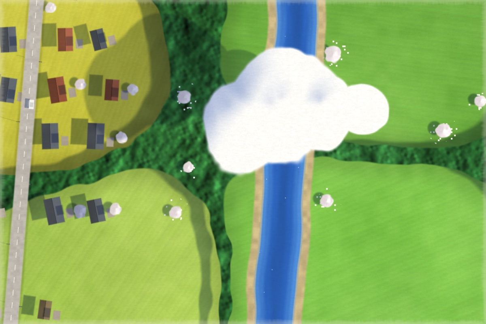
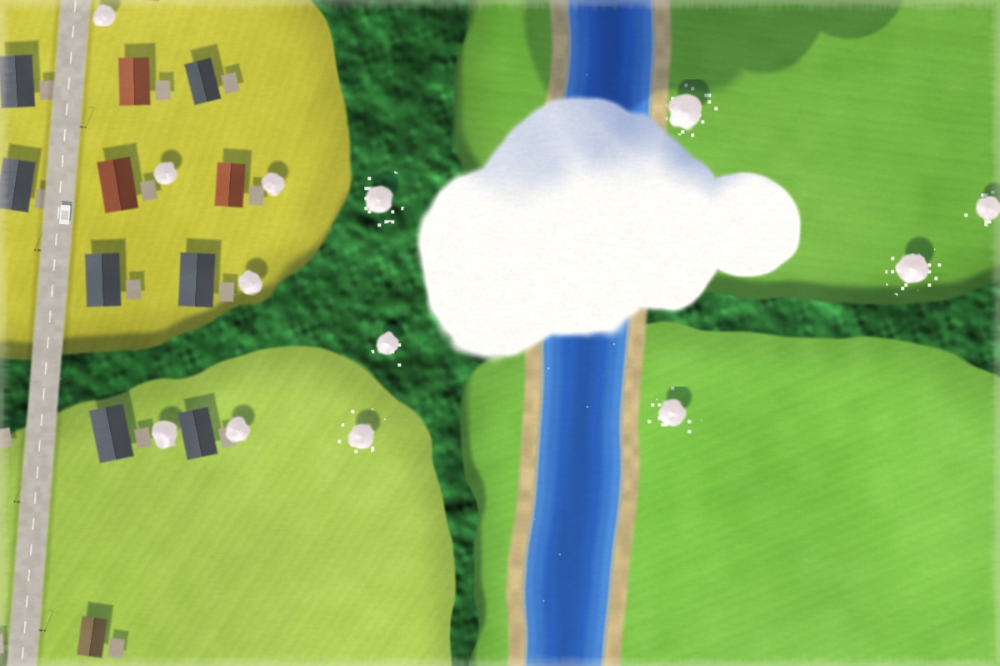
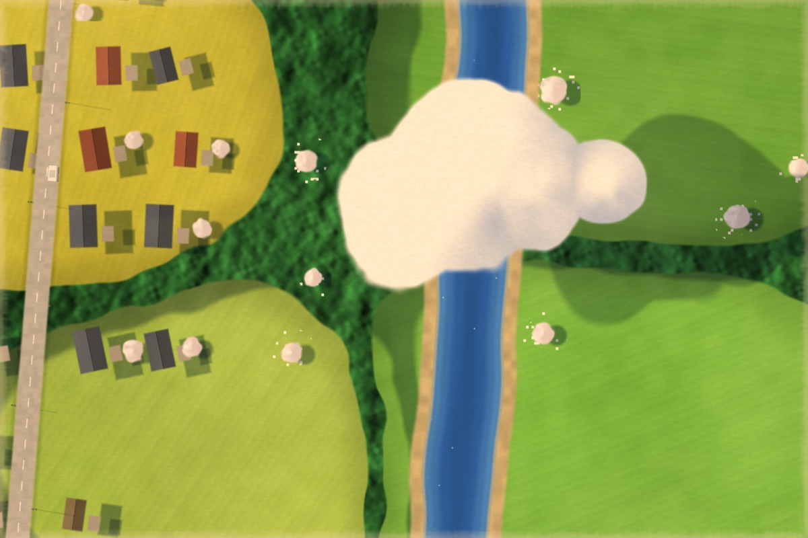
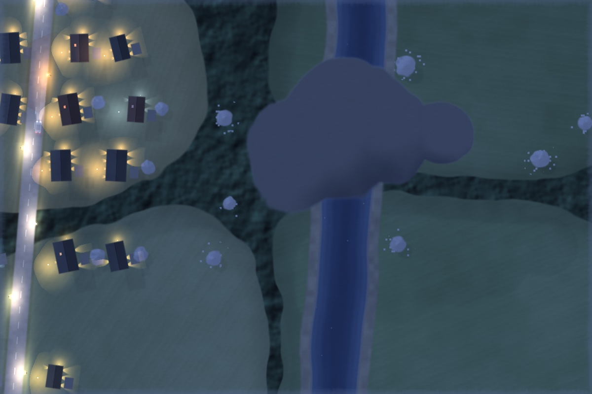
Pick a place from the menu bar, or let the journey carry on.
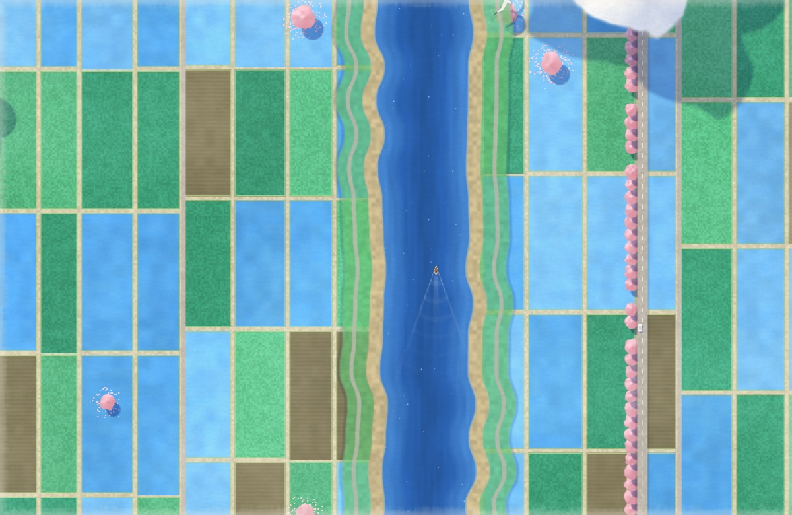
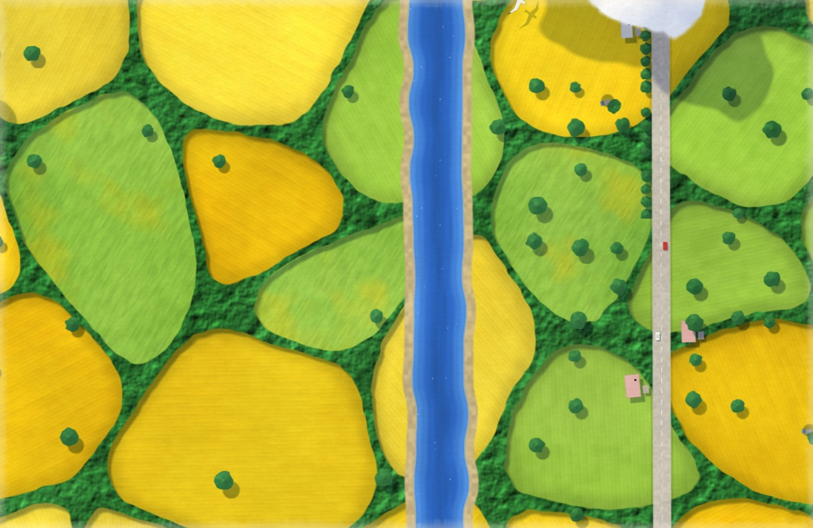
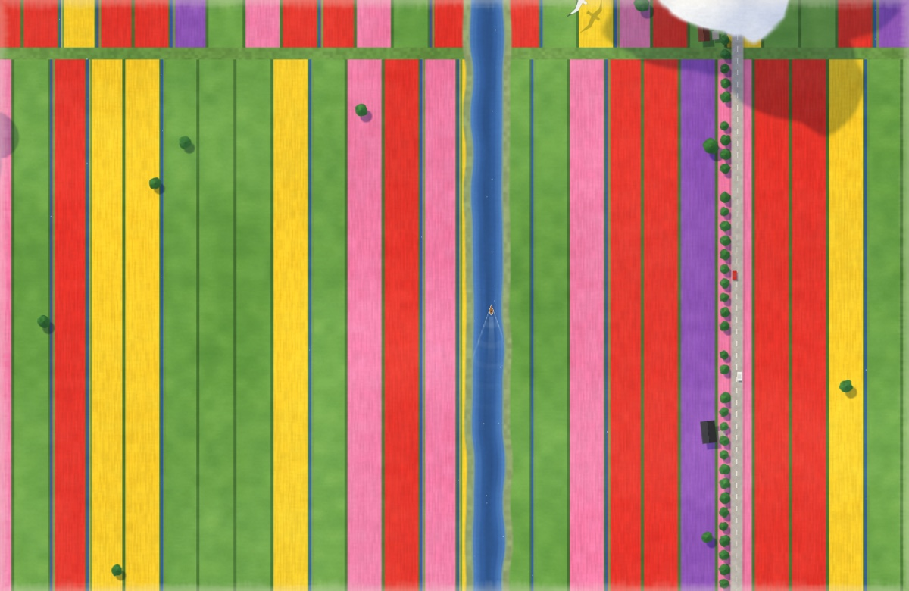
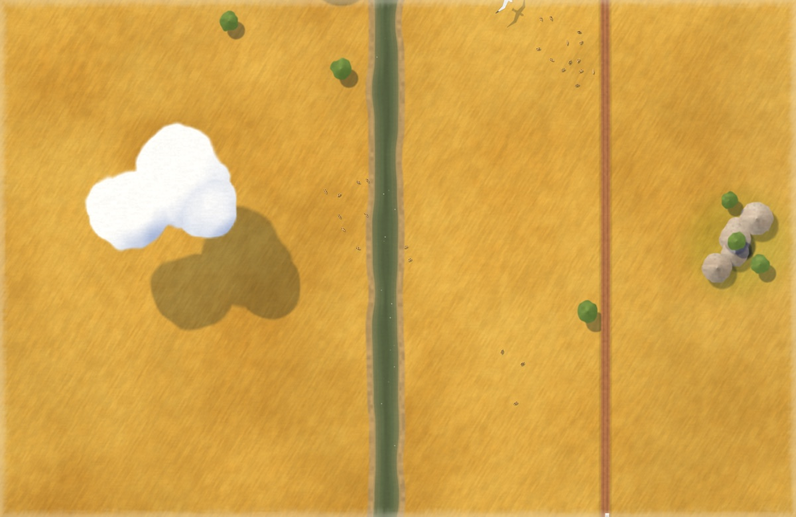
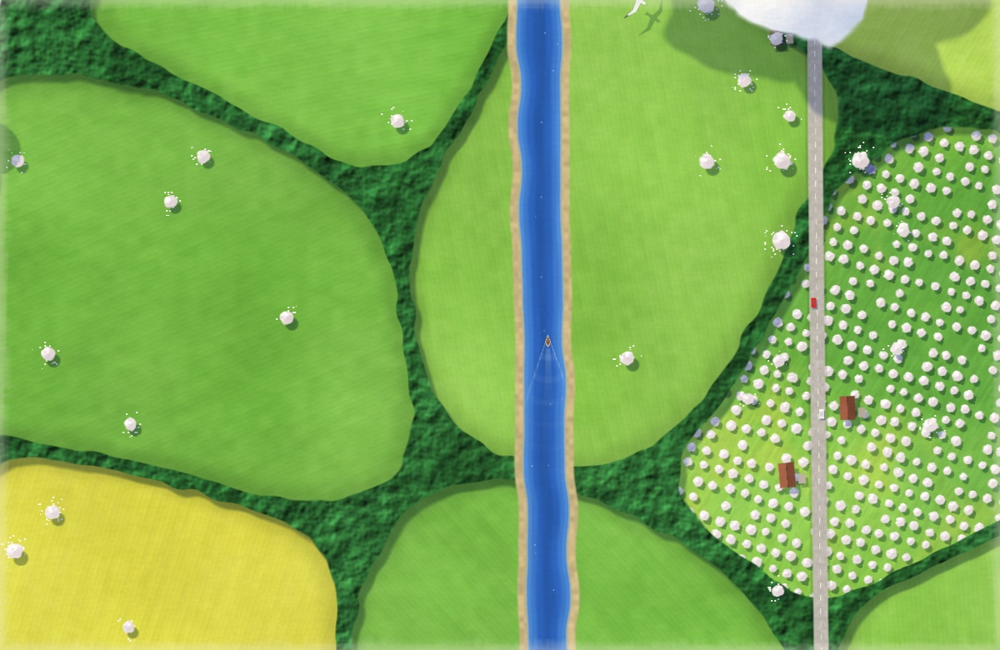
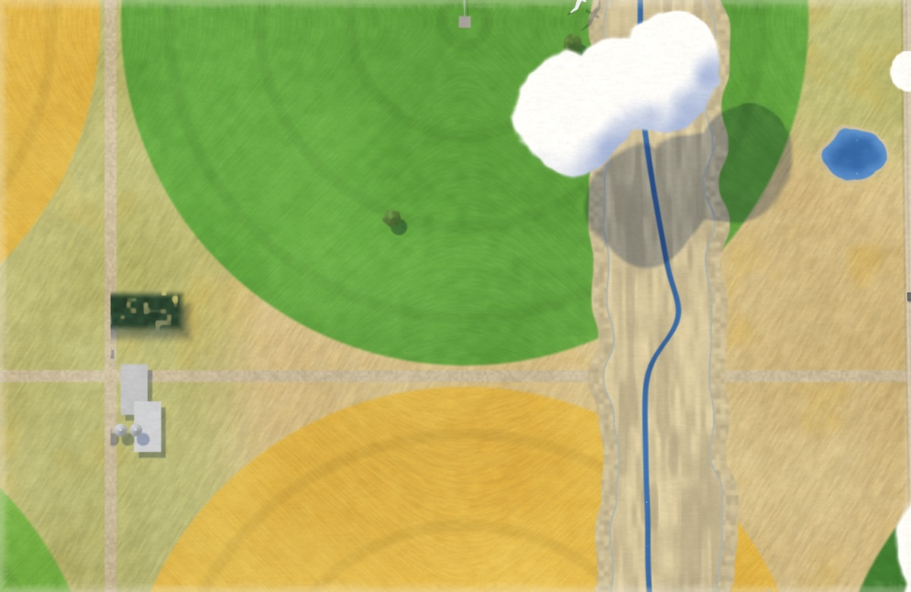
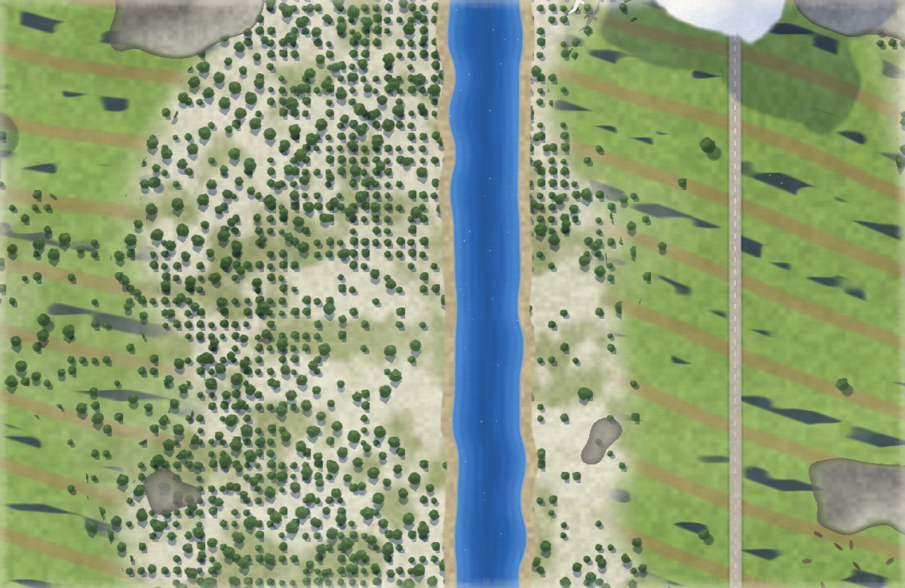
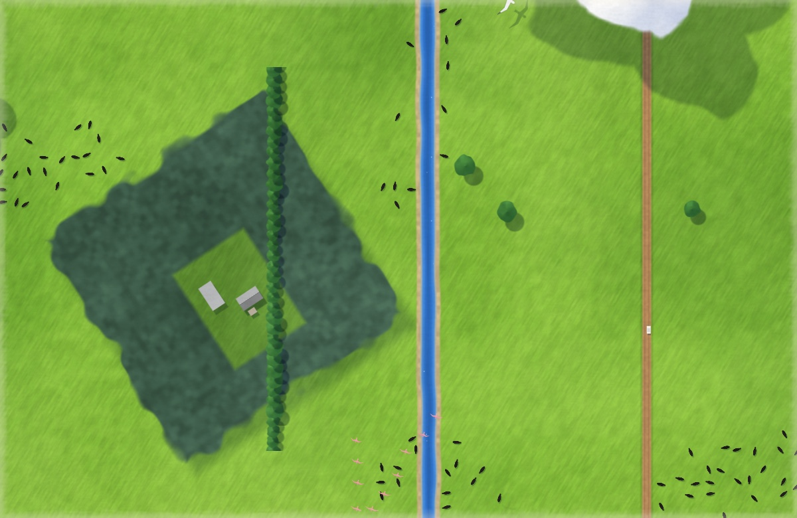
One payment. No subscription.
$7 once
A license key for up to three of your Macs. Signed and notarized by Apple.
Buy for $7Unlock
Download Outbound, open it, and paste the key from your receipt.
Download for MacA Mac with Apple silicon and macOS 26 or newer.
Very little. The ground is painted once and only new strips are added as you fly, so each frame is mostly copying. Outbound stops drawing whenever the desktop is covered, the screen is asleep or locked, and in Low Power Mode. On battery it flies at a lower frame rate, or you can have it hold a still painting.
macOS doesn't let apps animate the lock screen. Outbound keeps your desktop picture set to a painting of the place you are flying over, so the lock screen shows that. Quit Outbound, or turn this off in Settings, and your own picture comes back.
Yes. Every display shows its part of the same landscape, at a frame rate that suits it, and the bird can fly from one to another.
The code is public so you can read it, learn from it and help improve it. Using Outbound needs a license, whether you download it or build it yourself. See the license.
Up to three of your own. To move it to another Mac, deactivate it in Outbound's settings on the old one.